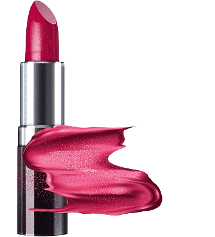
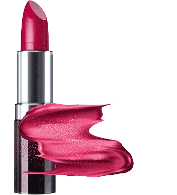
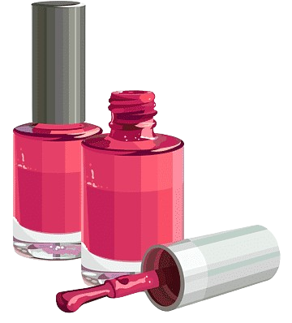

سرب یک ماده سمی است؛ اگر عنصر سرب در رژ لب های مورد استفاده ما وجود داشته باشد، به راحتی بعد از مصرف جذب پوست لب شده و وارد بدن می شود. این ماده خطرناک می تواند به سلول های مغزی آسیب جدی وارد کند. برای جلوگیری از این اتفاق، باید رژ لب بدون سرب سفارش دهیم.
 

عضو هیأتعلمی دانشگاه ویژگی یک کرم ضدآفتاب مناسب را ایجاد یک لایه روی پوست که بتواند اشعههای UVA و UVB را دفع کند و در عین حال رطوبت پوست را حفظ کند دانست و ادامه داد: ضد آفتاب رنگی و غیر رنگی هیچ تفاوتی ندارد و ضد آفتابهای رنگی هیچ عارضهای روی پوست بهجای نمیگذارند.

براش های سنتتیک یا مصنوعی از نایلون یا پلی استر تولید می شوند که یکی از ویژگی های خوب آن این است که عمر طولانی تری دارند. یکی دیگر از ویژگی های خوب براش های مصنوعی این است که مانند براش های طبیعی سطح آنها دارای خلل و فرج نیست و مواد آرایشی را به خود جذب نمی کنند.
یک لاک خوب باید به میزان تعادل، غلظت داشته باشد چون اگر به اندازه بیش از حد غلیظ باشد روی ناخن برجسته و دارای برآمدگی و فرورفتگی میشود و اگر غلظت لاک زیاد باشد مدت زمان زیادی طول میکشد تا لاک خشک شود و ممکن است ناخنتان به جایی بخورد اثر آن روی لاک باقی بماند. و برعکس آن اگر لاک رقیق باشد روی ناخن پخش میشود و رنگ لاک واضح نیست و باید چند بار لاک را تمدید کنید.

.png)